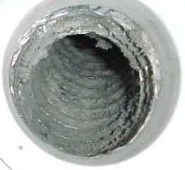
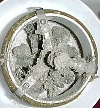
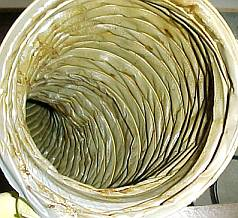

Weitere Datenübertragung Ihres Webseitenbesuchs an Google durch ein Opt-Out-Cookie stoppen - Klick!
Stop transferring your visit data to Google by a Opt-Out-Cookie - click!: Stop Google Analytics
Cookie Info. Datenschutzerklärung

 Konrad Fischers Altbau und Denkmalpflege Informationen - Startseite mit Impressum
Konrad Fischers Altbau und Denkmalpflege Informationen - Startseite mit Impressum
Inhaltsverzeichnis - Sitemap - über 1.500 Druckseiten unabhängige Bauinformationen
Die härtesten Bücher gegen den Klimabetrug - Kurz + deftig rezensiert +++
Bau- und Fachwerkbücher - Knapp + (teils) kritisch rezensiert
EnEV-Befreiung gem. § 25 (17 alt)! +++
Fragen? +++ Alles auf CD +++
Energiesparseite mit kommentierten Bauschadensnachrichten
Frechheiten zum besseren Bauen +++
Das Handwerkerquiz +++ Das Planerquiz für schlaue Bauherrn +++ Das Energiespar-W U N D E R!
Planen+Bauen, Kostenexplosionen+Korruption +++
27.10.06: DER SPIEGEL: Energiepass: Zu Tode gedämmte Häuser
20.3.08: WELT: "Teure Dämmung lohnt oft nicht - Klimaschutz: Eigenheimbesitzer können bei Umbauten eine Ausnahmegenehmigung erwirken" - Mit Aggen, Meier + Fischer!
2.3.08: WELT am Sonntag/WAMS: "Der Schimmel breitet sich wieder aus. - Starke Dämmung in Neubauten und falsches Lüften führen schnell zu Parasitenbefall" - Mit Aggen, Meier + Fischer!
Kostengünstiges Instandsetzen von Burgen, Schlössern, Herrenhäusern, Villen - Ratgeber zu Kauf, Finanzierung, Planung (PDF eBook)
Altbauten kostengünstig sanieren -
Heiße Tipps gegen Sanierpfusch im bestimmt frechsten Baubuch aller Zeiten (PDF eBook + Druckversion)

 Vorsicht! Klimaschutz!
Vorsicht! Klimaschutz!
Energiekeinsparung im Altbau 150%
3. Die Energiekeinsparmaßnahmen im Detail
(aktualisiert 9.05.08)
zurück: 1. Warum Energiekeinsparen? - 2. Der Energiekeinsparberater
3. Die Energiekeinsparmaßnahmen im Detail - vom Keller bis zum Dach, vom Boden bis an die Decke!
Keller
Alles fängt von unten an, nur der Fisch beginnt vom Kopf zu stinken, mein toller Energiespar-Hecht! Deswegen wird zuerst Dein
Keller ausgeschaufelt und ein Kilometer Perimeterdämmung darunter und davor gepackt. Ist ja immer gleich kalt da unten, diese
Energiekeinsparmaßnahme wirkt deswegen superduper. Ok, ein paar Filzlatschen hätten auch gereicht gegen die Fußkälte auf dem davor und danach immer gleich
kalten 12 Grad Betonzementestrich, aber so macht es eben mehr Unsinn.Und darauf kommt es unbedingt an beim Energiekeinsparen. Und danach bitte die
Erdgeschoßdecke auch von unten verpacken. Der Boden ist zwar auch davor und danach immer Zimmertemperatur 20 Grad und bleibt es
auch, aber es wärmt das sentimentalische Energiekeinsparherz so besser. Gefühlte Wärme ist ja so wichtig. Und Betroffenheitsschwulst heizt ein.
Wand
Dann Dein altes Hohlmauerwerk - auch so eine nette Erfindung aus den
Kindertagen des preußischen Energiekeinsparens - Hohlschicht vollgeblasen
mit Flocken, Schäumen, Bröseln oder Schnitzeln. Sonst wird da nix extra naß (oft rinnt die Brühe
sowieso schon an der Krone wg. undichter Verblechung und den Fugen wg. Kapillarnetzbildung im überharten
Zementfugmörtel ausreichend rein, doch das kannst Du noch steigern!). Und obendrauf, am besten davor und dahinter,
für Frühling, Sommer und auch Winter so richtig fette Dämmpakete. So viel hat da Platz. Und kostet
Deinen Schatz. Wie dick? Schau halt nach in der Bedarfsberechnung. Sie beruht auf dem λ-Wert für die
Wärmeleitung. Dabei werden im Labor wochenlang vollgeheizte Massivprüflinge mit in kürzester Zeit mit
wenig Energie erwämten Luftikussen verglichen. Wer kann wohl mehr Wärme abgeben und kriegt den schwarzen Peter?
Mit dem selben Recht könnte man den Wasserabfluß aus einem Stausee mit einem Schnapsglas vergleichen.
Obendrein darf der Prüfling die draußen von allen Himmelrichtungen gegebenen kostenlosen Wärmegewinne
aus Umgebungs- und Sonnenstrahlung nicht nutzen. Im Labor herrscht deswegen düsterste Finsternis, man will ja die
gewollte Wahrheit "unter stationären Bedingungen" herausbekommen und der sogenannte Dämmstoff muß gewinnen.
Er könnte mit der zugestrahlten Wärmeenergfie ja auch nix anfangen - am Tag wird er mangels Speichermasse scheulich warm und reißt vor sich hin,
in der Nacht ist er eben mangels Speichermasse total schnell erkältet und fängt sich durch seine Ritzen
möglichst viel Kondensat. Genau deswegen kommt der Thermographenscharlatan immer am frühen Morgen. Dann ist die Dämmfassade noch eisekalt,
die Massivbauteile aber noch gemütlich wärmeabstrahlend, was er tagsüber eingespeichert hat. Gut, daß du nix von Technik + Naturwissenschaft verstehst,
so weißt Du von diesem Schwindel nix und tust Dich erst mal nur wundern und nicht beschissen ärgern.
Wat mutt, dat mutt eben, koste es, was es wolle. Daß sowas all mit rechten (nein, eher linken) Dingen zugeht, mußt
Du jetzt glauben. Sonst nützt das nix. Daß der U-Wert - bei allem Blödsinn seiner Anwendung - mit zunehmender Dicke dann auch
wegen Hyperbeltragik obendrein immer weniger bringt? Egal. 45 Zentimeter sollen es schon sein, denk an die
Arbeitsplätze in der Bhopal-Chemie. Und daß das Zeug bald schwarzgrün verschimmelt wie Angkor Vat nach
der Hochleistungshydrophobierung? Dagegen kommt doch inzwischen Gift ohne Ende rein. Fungizide, Algizide, Insektizide,
Pestizide - das kann doch einen Seemann nicht erschüttern! Und wofür bietet denn die Chemie als Pharma auch
so schöne Mittelchen gegen Husten, Schnupfen, Heiserkeit, Kopfschmerz, Migräne, Haarausfall, Dermatitis,
Dermatose und vulgären Hautschorf? Irgendjemand muß doch die Gesundheitsreform refinanzieren, warum nicht
Du und Deine Lieben? Eben.
Haustechnik
Jetzt noch die Heizung modernisieren, auch wenn die alte noch tadellos ihren Dienst tat. Für die Zukunft also immer mindestens zwei
Heizsysteme. Brenner oder Steckdose zuzüglich Solar. Du darfst auch alternativ ein paar hundert Meter Schlauch im Vorgärtli
verbuddeln, oder den angebohrten Mittelpunkt der Erde solemäßig abkühlen, bis er nach fünf Jahren vereist ist. Sonst
könnte es im bitteren Winter vielleicht nicht langen. Außerdem bitte noch Photovoltaik, man gönnt sich ja
sonst nix. Wenn schon fossil, am besten Gas. Riecht nicht, ölt nicht, kohlt nicht, ascht nicht. Prima. Und fast jede Woche steht ein
neuer Gasfeuerwerker irgendwo auf der ersten Seite. Den Wiederaufbau zahlt die Versicherung, da kannst Du alles noch schöner
sparen. Für die Beerdigung gibt's bestimmt Zuschuß und die paar Überlebenden Opferrente.
Schön auch Heizluftherumgebläse mit Wärmerückgewinnung als kontrollierte Wohnraumlüftung mit WRG. Sonst mißlingt die
Keimschleimbrut in den raffiniert versteckten, nur noch für allerfieseste Feinstaubpartikel zugänglichen und
reinigungsfeindlich verwinkelten Luftkanälen, und wer will das schon? Wie das alles aussieht, wenns fertig ist?
So:



Mehr davon hier.
Was bitte?, Du hast schon von den Vorteilen der Wärmestrahlungsheizung gehört und willst das unbedingt haben? Dann aber bitte die
Unmengen Heizschlangen fest in den Böden, Wänden und/oder Decken eingemörtelt, schlauerweise rückseitig gedämmt. Nun lehrst Du den
Molekülen irgendwo hinten im Baustoff so richtig das Tanzen. Die abstrahlenden Oberflächen bekommen dafür
entsprechend weniger ab. Die Energie soll ja so richtig überall genutzt werden und den energiereich bewegten
Molekülen irgendwo da hinten gönnen wir es von Herzen.
Am besten wäre es auch, alle Lichtquellen ebenfalls einzuputzen, bis die Wände müde schimmern.
Die peinlichen Gesetze der elektromagnetischen Strahlung gelten ja auch dafür. Ach so, fast vergessen: Achte bei
Elektrogeräten immer auf die Energiesparkennzeichnung. Vielleicht bringt's das. Hauptsache, den alten Plunder raus und was
neues rein, und wer mißt schon alles nach? Zur elektronischen Einschläferung bitte Netzfreischalter.
Fenster
Die neuen Fenster dann als Passivzertifikatwärmeschutzkonstruktion mit fünfacher Lippendichtung und mindestens
Dreifachglas. Die alten Klimaschutz-Fenster, die sowohl alle Überschußfeuchte bauschadensfrei abkondensieren
ließen als auch genug trockene Frischluft und viel mehr Licht und damit auch kostenlose Solarenergie hereinließen und
obendrein die irre Menge Wärmestrahlung aus den vielen Tonnen speicherfähigen Baustoff nicht nach außen durch,
werden entmüllt. Es muß ja so richtig kosten, wenn es zukünftig von innen in die Konstruktion reinregnen soll. Und
vielleicht werden die kunstharzlackbelasteten Holzrahmen einst wieder bei Dir recycelt. Als Pellets aus dubiosester Lieferquelle vom Kaukasus
über Österreich und deswegen rotweißrotgrün ökozertifiziert. Ja, die
Ösis sind schlaue Burschen und wissen aus allem was zu machen. VomGewinn dann die Prozente an SPÖ, FP&Öuml; usw.
Dach
Um am Agenda21stammtisch so richtig zu prunken, mußt Du unbedingt auch die oberste Decke gegen den ungenutzten Dachboden oder
Spitzboden fett dämmen. Das geht ganz leicht von oben und hebt die Dämmwollenumsätze recht kräftig.
Daß die Wärme aus dem Zimmer schon im in der Decke vorhandenen massiven Fehlboden, der Betonplatte, dem alten Lehmwickel
oder gar nur der Sandschüttung fast total stecken bleibt, ist doch egal. Die Bedarfsberechnung wollte es eben anders. Und deswegen
auch im Dachausbau alles voll Wolle oder Flocken oder Watte oder Schaum stopfen. Du wolltest es doch imSommer immer richtig heiß dort
oben haben und dann imWinter so richtig feucht. Vergiß deswegen die dichtgeklebten Dampfsperren und diffusionsoffenen
Dachbahnen nicht. Wenn es alle so machen, muß es doch stimmen. Auch wenn die Feuchte aus dem überraschend nassen
Gespärre und durch die bald in dem so bewegungsfreudigen Holzgestänge entstehenden Rissli und Fügli so optimal
eingesperrt wird. Alles nach Norm übrigens. Dafür hast Du ja all die Fachleute.
Zu guter Letzt
Vergiß nicht, für all das teure Energiekeinsparen ordentlich Billigkredit und Zuschuß zu ordern. Das hemmungslose
Plündern aller unserer Kassen beruhigt Dein Gewissen, wenn Du danach in den leeren Geldbeutel guckst.
Energiekeinsparmaßnahmen einfach weglassen und Geld sparen? Kommt nicht in Frage, denk nur an die Mehrwertsteuer und Inflation. Sei also
kein Frosch: Die Kröten müssen raus, hilf auch Du ihnen über die Einbahnstraße!
Viel Erfolg!
Alles zum Energiepass und Energieausweis
Bitte gar nix davon lesen, wenn Du energiesparend verrotten willst:
Einführung zum Problemkreis "Modernes Bauen"
Die Produktvermarktung - Methoden und Tricks
Baustoff-Kapitel:
1. Gibt es "aufsteigende Feuchte"?
2. Erneuerung oder Erhalt von Altputzen, Fassadenanstrichprobleme
3. Erneuerung oder Erhalt von Altfenstern
4. Geeignete und ungeeignete Farbsysteme auf Holzuntergründen im Innen- und Außenbereich
 5. Holzschutz ohne Gift
5. Holzschutz ohne Gift
6. Luftkalkmörtel für alle Zwecke?
7. Mineralische untergrundverträgliche Anstrichsysteme
8. Ertüchtigung historischer Gründungen
9. Natursteinrestaurierung/Naturstein
9a. Steinboden
9b. Reinigungsverfahren für verschmutzte Altoberflächen
10. Wandbildner im Altbau
10a. Fachwerkbau + Fußbodenaufbau
11. Der Stahlbeton und Zement
12. Dachdeckung und -konstruktion
13. Wärmedämmung
14. Brandschutz im Altbau
Extra: Vom richtigen und falschen Heizen - die Hüllflächentemperierung
Extradry: Geheimnisse der Ökoreligion, ihre Ursprünge und ihre Folgen
Altbau und Denkmalpflege Informationen Startseite